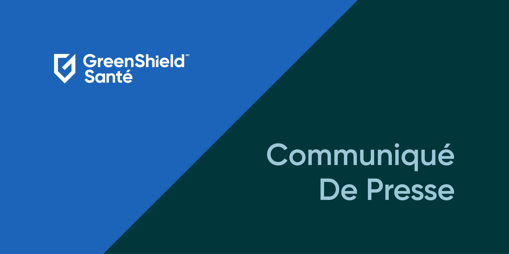
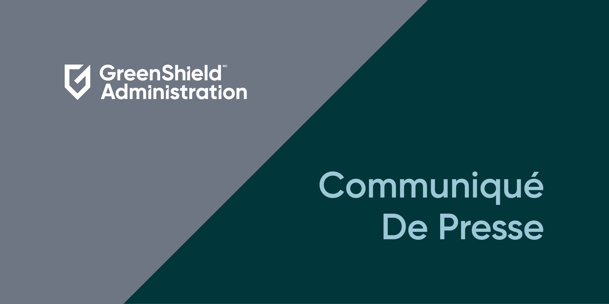

Au Canada, la population passe 2,5 fois plus de temps tenter d'obtenir des soins de sant qu'en consultation avec un mdecin.
Lire la suite
Administrateur du rgime Assurance Entreprise Membre du rgime Sant
Esprits sains, enfants sains, PsychologieCanada et GreenShield: amliorer la sant mentale des parents et le lien parent-bb
- Administrateur du rgime
- Communautaire
- Membre du rgime
- 
GreenShield contribue largir l'accs aux services de sant mentale gratuits en Ontario
GreenShield Canada octroie 750 000$ la Facult de mdecine dentaire pour amliorer laccs aux soins buccodentaires
- Administrateur du rgime
- Communautaire
Webinaire: tablir une alliance inclusive avec la communaut 2SLGBTQ+ et offrir du soutien en milieu de travail
Webinaire: Grer le stress
Webinaire: Parler aux enfants et aux adolescents des relations saines
Webinaire: Le spectre de la sant mentale
Webinaire: Grer la rsolution des conflits sur le lieu de travail
Webinaire: Intgrer la sant physique dans votre mode de vie trpidant
Webinaire: Reconnatre et prvenir le stress et lpuisement des proches aidants
Webinaire: Favoriser la scurit psychologique pour un lieu de travail inclusif
Webinaire: Stratgies dautosoins pour amliorer lhumeur, le sommeil et la nutrition
Sant mentale et adolescents : Les mres ne vont pas bien
- Administrateur du rgime
- Membre du rgime
- Communautaire
Quest-ce que la TCC en ligne et comment peut-elle vous aider?
- Administrateur du rgime
- Assurance
- Membre du rgime
Une personne qui me ressemble pour m'accompagner dans mon processus de gurison
- Communautaire
- Membre du rgime
- Administrateur du rgime
Quels sont les programmes qui aident payer les mdicaments en Ontario?
- 
Rapport sur les tendances mdicaments 2023 de GreenShield Administration : Utilisation accrue en raison des nouvelles thrapies
- Administrateur du rgime
- Administration
Comment la thrapie ma aide surmonter ma dpression post-partum
- Administrateur du rgime
- Assurance
- Membre du rgime